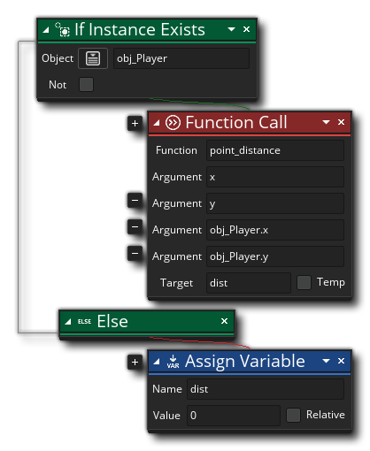

Beschreibung
Diese Aktion kann verwendet werden, um eine beliebige GML-Funktion aufzurufen. Sie geben die aufzurufende GML-Funktion an und liefern dann alle zusätzlichen Argumente, die sie benötigt, dh: alle Werte (Strings, Ganzzahlen, Ressourcenindizes usw.), die Sie in die Funktion eingeben möchten, um sie zu verwenden. Sie können zusätzliche Argumenteingaben hinzufügen, indem Sie auf das Pluszeichen klicken
neben der Aktion, und Sie sollten sicherstellen, dass Ihre Argumentanzahl mit der der verwendeten Funktion übereinstimmt (dh wenn die Funktion 3 Argumente benötigt, sollten Sie 3 Argumente angeben). Einige Funktionen können auch einen Wert für die spätere Verwendung in der Aktionsblockliste zurückgeben. Sie können also auch die Zielvariable angeben, die diesen Rückgabewert speichern soll, der zuvor erstellt wurde oder ein neuer temporärer Wert sein kann (wenn Sie die Option "Temp" Kontrollkästchen). Sowohl das Ziel- als auch das Argumentfeld können leer gelassen werden, wenn sie nicht benötigt werden.
Aktionssyntax:

Argumente:
Streit Beschreibung Script Die GML-Funktion zum Anrufen. Argument0... ArgumentX Die verschiedenen Argumente (Werte), die an die Funktion übergeben werden sollen. Target Der Name der Variablen, die für alle zurückgegebenen Werte verwendet werden soll (kann leer gelassen werden).
Beispiel:
Der obige Aktionsblockcode prüft, ob eine Instanz von "obj_Player" existiert, und ruft dann die Instanz auf point_distance Funktion, übergibt die x- und y-Position der aktuellen Instanzen sowie die x- und y-Position von obj_player. Es wird die Entfernung zwischen den beiden Punkten zu dem (zuvor erstellten) zurückgeben dist Instanzvariable oder setze die Variable auf 0, wenn keine Instanz von "obj_Player" im Raum vorhanden ist.